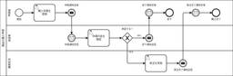
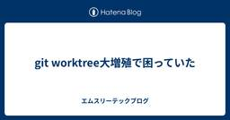
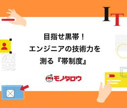
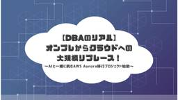
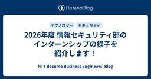

直近1週間の人気フィード
はてなブックマーク数を元に新着優先で並べ替え

bpmn.io で始める AI-Ready な業務フロー管理 165
165 フューチャー技術ブログ
フューチャー技術ブログ
業務フローの記述形式に BPMN 2.0 を採用し、bpmn.io のエディタ・bpmnlint による静的解析・生成 AI によるレビュー・bpmn-to-image での画像化で管理する方法を紹介します。
2日前

「ソフトウェアエンジニアリングの基礎」から見る読書マップ 189 フューチャー技術ブログ
オライリー・ジャパンの『ソフトウェアエンジニアリングの基礎 ―コーダーからエンジニアになるための実践ガイド』を読んだ感想と、各章の「関連リソース」に挙がる書籍55冊を整理した読書マップを紹介します。
3日前
RailsプロダクトにおけるDDD試験導入のリアル — なぜ本格採用を見送り、ActiveRecord中心の設計を選択したのか 42 stmn tech blog
stmn tech blog
スタメンでCTOしております、@tnir (X: @takuya_stmn, note: @takuya_stmn) です。 2023年9月、スタメン技術ブログで次の記事を公開しました。 ドメイン駆動設計は何を解決する手法なのか 記事では、TUNAG の技術的負債解消に向けてドメイン駆動設計（DDD）の導入を検討している、と書きました。その後の対外的な印象として、「スタメンは DDD を積極導入し
2日前
Haiku 5.5 を機に Sonnet 以下で動かしていたサブエージェントを見直した 54 GENDAのフィード
GENDAのフィード
はじめに株式会社GENDA 開発部エンジニアの奥山です。Claude Haiku 5.5 が出ました。https://www.anthropic.com/claude-haiku-5-5Haiku で effort を指定できるのは 5.5 が初めてで、単価は Haiku 4.5 のちょうど 1/10 になっています。モデルinput / output（per MTok）Sonnet 5.5 比C
2日前

若手エンジニアに必要だと感じた「AIを使う力」 46 三菱UFJインフォメーションテクノロジーテックブログのフィード
若手エンジニアに必要だと感じた「AIを使う力」 はじめに私は現在、JavaやReactを使った金融系Webアプリの開発に携わっています。開発経験はまだ浅く、業務では分からないことに遭遇する場面も多くあります。そのため、調査、実装、文章作成、レビューなど、さまざまな場面でAIを使ってきました。私自身、AIを使うことで実装や調査を効率化できる場面が多くありました。一方で、使えば使うほど「若手エンジニア
2日前

AI時代に、あえて「一人で全部」をやめる。SansanがPdMを5つの専門ロールに分ける理由 24 Sansan Tech Blog
Sansan Tech Blog
AIの発展によって、プロダクトマネジャー（以下PdM）が一人で担える仕事の範囲は広がっています。プロトタイプをつくり、コードを書き、顧客の声を整理し、Go-to-Marketまで考える。「これからは一人のPdMが、より多くを担う」。それがAI時代の定石に見えます。Sansanが選んだのは、一見するとその流れに逆行する戦略です。PdMに求める共通の基礎を定めた上で、役割を5つの専門領域に分け、それぞ
1日前

APIセキュリティ、どこから見直す？ OWASPとNISTを使った点検の始め方 57 赤帽エンジニアブログ
こんにちは。レッドハットコンサルティングチームの木嶋です。 最近ニュースでは、情報漏洩事件が日々話題になっていますね。 AIの高度化に伴い、攻撃側によるAIの活用についても報告されるようになりました。 話題に上がる事件の中には、APIが攻撃経路の一つとなったと考えられるケースも含まれています。 この機会に今一度APIセキュリティの基本に立ち返り、自分たちのシステムで十分な対策が取れているか、振り返
3日前
RubyGems/Bundler 4.1 で追加される override と prune の紹介 16 ANDPAD Tech Blog
ANDPAD Tech Blog
こんにちは、Ruby コミッタの柴田 (hsbt) です。夏のあいだに master へ入れた変更がそれなりの量になっていて、4.1.0 向けのリリースノートを書き始める前から分量に圧倒されています。 RubyGems と Bundler の 4.1.0.beta2 を 2026 年 10 月 8 日にリリースしました。4.1 では新しい機能がいくつか入っているので、何回かに分けて紹介していきます
2日前
Codex+エージェント群で構築した自律型開発ループ：ロリポップ！AIゲートウェイ開発の舞台裏 26 Pepabo Tech Portal
Pepabo Tech Portal
2026年度に新卒エンジニアとして入社しました、ロリポップ・ムームードメイン事業部 第一事業開発チームのゆっきーです。8月25日にリリースした「ロリポップ！AIゲートウェイ」の開発を担当しています。今回の開発では、Codex+エージェント群による自律的な開発ループを構築しました。人間が寝ている間もエージェントがコードを書き、レビューし、テストする。プロジェクト発足から提供開始までの約7週間で、Gi
2日前

手動テストを渡すだけでE2Eが完成する仕組みを作りました 119 kickflow Tech Blog
kickflow Tech Blog
手動テストを渡すだけでE2Eが完成する仕組みを作りました こんにちは、kickflow QAチームのyanagiyaです。 今回は、テスト管理ツールに登録したテストケースを起点に、Playwright のE2Eテストを書いてPRを出すところまでを Claude Code に任せるスキルを作りました。 あわせて、E2E専用のテナントを用意し、どのテストをどのテナントで動かすかをスクリプトに決めさせる
5日前

ファインディの開発文化 - 小さな積み重ねと、それを支える仕組み 11 Findy Tech Blog
Findy Tech Blog
こんにちは。ファインディ株式会社でプリンシパルエンジニアをしている戸田です。 このテックブログではこれまでファインディの開発組織の取り組みを紹介してきました。一方で、開発組織の文化を紹介した記事はあまりありませんでした。 そこで今回は、弊社のことをさらに知ってもらうためにファインディの開発文化を紹介します。日々の開発の進め方から、それを組織に広げて続けるための仕組み、そして文化を支えているものまで
2日前

LLM Wikiの組織運用に向けて ── 陳腐化を防ぐ更新の仕組み 110 LayerX エンジニアブログ
LayerX エンジニアブログ
はじめに LayerX バクラク事業部 Platform Engineering 部 Enabling グループの shibutani です。 「この機能、実際にはどう動くんだっけ？」という問いは、QAがテストの期待結果を書くときにも、CSがお客様からの問い合わせに答えるときにも、日常的に発生します。答えを探す先はNotionの設計仕様書、Zendeskのヘルプ記事、GitHubのコードの3つに分
5日前

tensorlake ソフトウェアサプライチェーン攻撃の概要と対策指針 15 GMO Flatt Security Blog
GMO Flatt Security Blog
2026年10月8日、npm パッケージ tensorlake に悪性コードが注入されました。 注入された悪性コードは、Infostealer機能を持つマルウェアです。preinstall フック経由で実行され、AWS・GitHub・Kubernetes・Vault などの認証情報を盗み出して送出する挙動が確認されています。また、マルウェアがspawnするバックグラウンドサービスが奪取されたGit
2日前

git worktree大増殖で困っていた 58 エムスリーテックブログ
エムスリーテックブログ
Gitのworktreeサブコマンドは、AIエージェント開発が普及してから急によく知られるようになった感があります。実際にこれが登場したのはもう10年前、2016年のことだそうですね。私自身は業務の性質上、複数の依頼案件を並列で進めることが多くてAIエージェントが出てくる前からworktreeみたいなことをしていました。同じリポジトリを何個もローカルに別々にcloneしてあっちへ行ったりこっちへ来
5日前

エンジニアの技術力を測る「帯制度」をAIで爆速開発し、1年で450の "段位" を授与した話 58 MonotaRO Tech Blog
MonotaRO Tech Blog
はじめに こんにちは。プラットフォームエンジニアリング部門の池田（@progrhyme）です。 最近は自身のリソースのほぼすべてを、社内プロジェクト 「DOJO」 及びその内の施策の1つである 「帯制度」 に投入しています。 DOJOとは？ MonotaROのDOJOとは、テクニカルスキルを中心とする社内の研修制度です。 制度の詳細や設立の経緯については、3月に公開されたこちらの記事をご覧ください
5日前
@subql/common ソフトウェアサプライチェーン攻撃の概要と対策指針 46
GMO Flatt Security Blog
2026年10月5日、npm パッケージ @subql/common に悪性コードが注入されました。@subql/common は、SubQuery の GitHub リポジトリ subquery/subql で開発されているパッケージです。 注入された悪性コードは、Infostealer と C2 クライアントの機能を併せ持つマルウェアです。postinstall フック経由で実行され、AWS・
5日前
Claude Codeのルーティンを利用した開発フローの自動化 62 RAKUS Developers Blog | ラクス エンジニアブログ
RAKUS Developers Blog | ラクス エンジニアブログ
目次 はじめに サマリ 人間はタスクを完全には並列処理できない 以前にも承認待ちの課題は存在していた 作った仕組みと設計上の工夫 issueの選定条件を明確にする 1回の実行で1 issueだけ扱う 複数のリポジトリを横断してコンテキストを集める まとめ 参考文献
5日前

食べログアプリ開発で実践したハーネスエンジニアリング 54 Tabelog Tech Blog
Tabelog Tech Blog
こんにちは。食べログカンパニー 開発本部 技術部でアプリ基盤チームのリーダーをしている原です。チームでは、AI活用推進、プロダクト開発支援、技術広報などを担当しています。 2026年9月11日〜9月13日の日程で開催された iOSDC Japan 2026 のスポンサーセッションで、『スマホアプリ開発におけるハーネスエンジニアリングの取り組み』というタイトルで登壇しました。 登壇は20分枠で、時間
6日前
Next.js から React Router に移行しました 28 PR TIMES 開発者ブログ
PR TIMES 開発者ブログ
こんにちは、フロントエンドエンジニアのやなぎ（@apple_yagi）です。 PR TIMESでは、2023年頃からプレスリリース掲載ページやトップページなどをNext.jsへ移行してきましたが、今回、そのNext.js […]
5日前

【DBAのリアル】オンプレからクラウドへの大規模リプレース！AIと一緒に挑むAWS Aurora移行プロジェクト始動 21 ぐるなびをちょっと良くするエンジニアブログ
ぐるなびでデータベース管理者（DBA: Database Administrator）を担当している吉田です。 現在、ぐるなびではクラウドの利用を促進しており、「オンプレミス環境からクラウド環境への大規模な移行計画」という大きなプロジェクトを進めています。 今回は、その一環として進行しているオンプレミスMySQLからAmazon Aurora(MySQL)への移行プロジェクトと、その裏側にあるDB
4日前

Mods で Claude Code のセッションごとに管理できるメモ帳を作った 9 イエソド テックブログのフィード
はじめに株式会社イエソドで機能開発チームのリーダー兼エンジニアをしている坂口と申します。私は開発に Claude Code のデスクトップアプリを使っているのですが、作業の途中でメモを残したくなることがよくあります。いまの作業が終わったら依頼したいことなどの簡単なメモです。元々 Raycast Notes でメモを取っていたのですが、開いているセッションが増えると、どのメモがどのセッションのものか
4日前

CoCo CLI Hackathon 2026 体験記 — Snowflake CoCoによるネットワーク運用レポート自動生成 4 NTT docomo Business Engineers' Blog
Snowflake主催の[CoCo CLI Hackathon 2026](https://hack2skill.com/event/cococlihack/)(APJ: アジア太平洋・日本地域)にチームcocomoとして参加し、Winner(優勝)を受賞しました。この記事では、約2ヶ月間のハッカソンを通じて何を考え、どう判断し、何を学んだかを体験記として紹介します。
5日前

2026年度 情報セキュリティ部のインターンシップの様子を紹介します！ 4 NTT docomo Business Engineers' Blog
こんにちは、NTTドコモビジネス情報セキュリティ部です。 NTTドコモビジネスを含めたドコモグループでは今年も現場受け入れ型インターンシップを開催いたしました。 情報セキュリティ部でも5つのポストに対して8人のインターンシップ生に来ていただき、2週間にわたるプログラムに取り組んでいただきました！ インターンシップ生の目線で、ポスト紹介や体験した業務内容、振り返りをまとめてもらいました。 この記事で
6日前
cognee CEOの講演で聞いたナレッジグラフの話 ── エージェントの記憶は「増える」から「良くなる」へ 3 LayerX エンジニアブログ
こんにちは、LayerX の Ai Workforce事業部でFDE（Forward Deployed Engineer）をやっているakioです！ 少し前ではあるのですが、2026年7月にサンフランシスコでcogneeというナレッジグラフ（以下KG）関連のサービスを提供している会社のCEOのお話を聞く機会がありました。cogneeは、AIエージェント向けの「記憶」をオープンソースで提供している会
5日前

Renovate 設定の改善 3 Timee Product Team Blog
Timee Product Team Blog
こんにちは。タイミーのデータエンジニアリング部DSグループでMLOpsを担当しているYukitomoです。 前回の記事では、Python + uvのモノレポ環境において、Renovateを用いて依存関係更新のプルリクエストを制御するための基本設計を紹介しました。 その後、実際に運用してみると、Renovateの管理対象はPythonの依存パッケージだけでは収まりませんでした。devcontaine
6日前